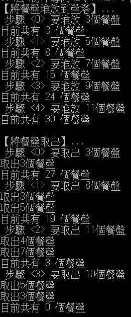
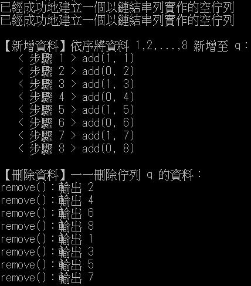

佇列與堆疊
＊java19片段:以陣列實作堆疊容器，存放字元資料
處理運算子：{'(','+','-','*','/','^'}
運算子的優先序：{ 0, 1, 1, 2, 2, 3}，數值越大越優先
將中置運算式改後置運算式並將輸入值帶入運算式求值
執行結果

程式碼
import java.util.Scanner;
class CharStack{
char char_array[]; // 堆疊陣列
int top; // 堆疊頂端指標
int n; // 堆疊容量為 n
CharStack(int size){
char_array = new char[size]; // 堆疊容量為 size
top = -1;
n = size;}
// ---------------------------------------------
// 新增資料，成功 return true，失敗 return false
// ---------------------------------------------
boolean push(char data){
if(!full()){
char_array[++top] = data;
return true;}
else{ //堆疊已滿
return false;}
}
// --------------------------
// 刪除資料(取出堆疊頂端資料)
// --------------------------
char pop(){
return char_array[top--];}
// ------------------------------------------
// 查看堆疊頂端的資料為何(非取出堆疊頂端資料)
// ------------------------------------------
char top(){
return char_array[top];}
boolean full(){
return (top >= n - 1) ? true : false;}
boolean empty(){
return (top <= -1) ? true : false;}
}
class Postfix
{
char operator[] = {'(','+','-','*','/','^'};
int priority[] = { 0, 1, 1, 2, 2, 3};
// ----------------------------------
// 將中置式(infix)轉成後置式(postfix)
// ----------------------------------
String transfer(String infix){
String result = "";
char c, k;
int i = 0, j = -1;
CharStack s = new CharStack(infix.length());
for(i = 0; i < infix.length(); i++){
c = infix.charAt(i);
switch(c){
case '(' : s.push(c);
break;
case ')' : while((! s.empty()) && ((c = s.pop()) != '('))
result = result + String.valueOf(c);
break;
case '+' :
case '-' :
case '*' :
case '/' :
case '^' : if(!s.empty()){
k = s.top();
while(priority_of_op(k) >= priority_of_op(c)){
result = result + String.valueOf(s.pop());
if(!s.empty())
k = s.top();
else
break;
}
}
s.push(c);
break;
default : // c 為運算元
result = result + String.valueOf(c);
}
}
while(! s.empty()){
result = result + String.valueOf(s.pop());}
return result;}
// ---------------------
// 傳回運算子 c 的優先序
// ---------------------
int priority_of_op(char c){
int i;
for(i = 0 ; i < operator.length ; i++)
if(operator[i] == c)
return priority[i];
return -1;}
}
public class E{
public static void main(String args[]){
Scanner input = new Scanner(System.in);
int i;
String infix[] = {"a-b/c+(d*e)-f",
"a*b-c/d",
"a^b-c+d*(e+f)",
"x-y*z*a+b",
"x/y+z^s/g"};
String s_postfix ;
Postfix p = new Postfix();
for(i = 0; i < infix.length; i++){
s_postfix = p.transfer(infix[i]);
System.out.println("中置運算式 :" + infix[i]);
System.out.println("後置運算式 :" + s_postfix);
System.out.println("請輸入變數之值，結束請輸入\".\"：");
CharStack t = new CharStack(s_postfix.length()); //產生新的堆疊物件存放運算值
for(int j=0; j< s_postfix.length();j++){ //帶入值
char c,z;
int a , b,x ;
c = s_postfix.charAt(j);
switch(c){
case '+' :
b = t.pop();
a = t.pop();
x = a+b;
t.push((char) x);
break;
case '-' :
b = t.pop();
a = t.pop();
x = a-b;
t.push((char) x);
break;
case '*' :
b = t.pop();
a = t.pop();
x = a*b;
t.push((char) x);
break;
case '/' :
b = t.pop();
a = t.pop();
x= a/b;
t.push((char) x);
break;
case '^' :
b = t.pop();
a = t.pop();
x = (int) Math.pow(a,b);
t.push((char) x);
break;
default :
System.out.println(" > "+c);
System.out.print(" > ");
int k = input.nextInt();
t.push((char) k);}
}
int result = t.pop();
System.out.println("運算式值為： "+result);
System.out.println("-----------------------------");
}
}
}
＊java20片段:以堆疊實作餐盤塔之餐盤堆放及取出
執行結果

程式碼
public class Tray_31580{
int max_size; //最大容量
int curr_size; //現有總數
Stack s;
Tray_31580 (int n) {
s = new Stack(6); // 6 為實作堆疊的陣列大小
max_size = n;
curr_size = 0; }
void display( ) {
System.out.println("目前共有 "+curr_size+" 個餐盤");}
// 堆放 n 個餐盤
void in(int n)
if( n + curr_size < max_size ){
s.push(n);
curr_size = curr_size + n;}
else{
s.push( max_size - curr_size);
curr_size = max_size;}
}
// 取出 n 個餐盤
void out(int n){
int x = s.pop();
curr_size = curr_size - x;
while(n >= x){
System.out.println("取出" + x + "個餐盤");
n = n - x;
if(s.empty() || n == 0)
return;
else{
x = s.pop();
curr_size = curr_size - x;}
}
if(n < x){
System.out.println("取出" + n + "個餐盤");
in(x - n);}
}
public static void main(String args[]){
int i;
Tray_31580 t = new Tray_31580(30); // 產生一個名為 t 的 Tray_31580 物件
int a[] = {3, 5, 7, 9, 11};
System.out.println("【將餐盤堆放到盤塔】...");
for(i = 0; i < a.length; i++){
System.out.println(" 步驟 < " + i + " > 要堆放 "+ a[i] + "個餐盤");
t.in(a[i]);
t.display();}
int b[] = {3, 8, 11,10};
System.out.println("\n【將餐盤取出】...");
for(i = 0; i < b.length; i++){
System.out.println(" 步驟 < " + i + " > 要取出 "+ b[i] + "個餐盤");
t.out(b[i]);
t.display();}
}
}
＊java21片段:以鏈結串列實作一個佇列
執行結果

程式碼
class Node{ // 定義一個單向鏈結串列之節點結構
int data; // data：資料欄
Node link;}; // link：鏈結欄
class Queue{
Node front;
Node rear;
Queue(){
front = new Node();
rear = new Node();
front.link = null;
rear.link = null;
System.out.println("已經成功地建立一個以鏈結串列實作的空佇列");}
// -----------------------------------------------------------------
// 新增資料(將資料加入佇列尾端)，成功 return true，失敗 return false
// -----------------------------------------------------------------
void add(int data){
Node x = new Node();
Node y = new Node();
x.data = data;
x.link = null;
if(empty()){ // 空佇列
front.link = x;
rear.link = x;}
else{
y = rear.link;
y.link = x;
rear.link = x;}
}
// --------------------------
// 刪除資料(取出佇列頭端資料)
// --------------------------
int remove(){
int data;
Node x = new Node();
x = front.link;
front.link = x.link;
data = x.data;
if (front.link == null)
rear.link = null;
return(data);}
boolean empty(){ // 佇列已空(return true)
return (front.link == null) ? true : false;}
}
public class Mid_PQueue41{
Queue q0, q1;
Mid_PQueue41(){
q0 = new Queue();
q1 = new Queue();}
public void add(int i, int data){
if (i == 0)
q0.add(data);
else
q1.add(data);}
public int remove( ){
int k;
if (!q0.empty())
k = q0.remove();
else
k = q1.remove();
return k; }
boolean empty(){ // 傳回是否已空
return (q0.empty()&&q1.empty()) ? true:false;}
public static void main(String args[]){
int i;
Mid_PQueue41 q = new Mid_PQueue41(); // 產生一個名為 q 的 Mid_PQueue41 物件
System.out.println("\n【新增資料】依序將資料 1,2,...,8 新增至 q：");
for(i=1; i <= 8; i++){
System.out.println(" < 步驟 " + i + " > add(" + (i%2) + ", " + i +")");
q.add(i%2, i);}
System.out.println("\n【刪除資料】一一刪除佇列 q 的資料：");
while( !q.empty() ){
System.out.println("remove()：輸出 " + q.remove() );}
}
}